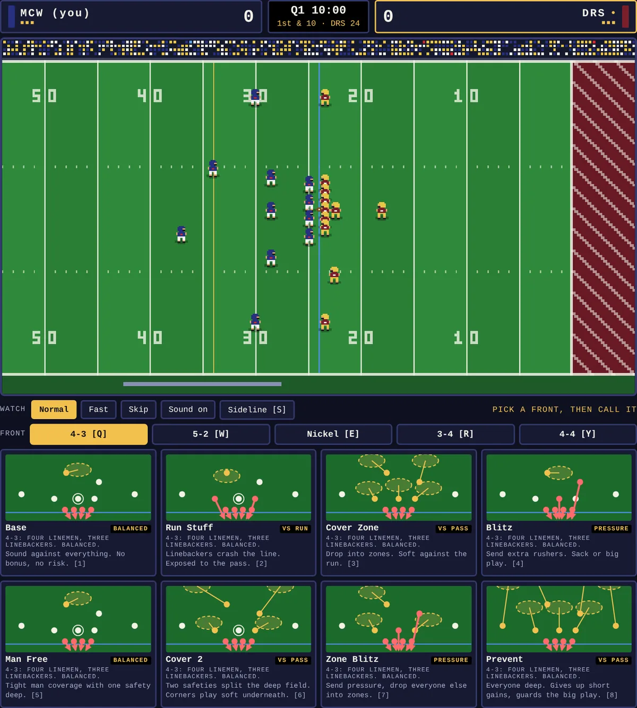

Call the plays
Build an eight-play book from a library of 24 across five formations. Run it inside, stretch it wide or throw it deep, then punt, kick or go for it on fourth down.

Free in your browser · Mouse, keyboard or touch · You call the plays, your players carry them out
Tip: click the game once so it can hear your keyboard. Number keys pick a play.
What is in the game today.
Build an eight-play book from a library of 24 across five formations. Run it inside, stretch it wide or throw it deep, then punt, kick or go for it on fourth down.

Pick a front, then stuff the run, drop into zone or send the blitz. Guess right and your defense gets the edge. Guess wrong and you will see why.

All 22 players run the play on the field. Watch at normal speed, fast, or skip ahead. Touchdowns and turnovers always get a replay.

Players tire and get rested. Set your depth chart and game plan, beat the play clock, and kneel it out when the game is won.
Where the game is headed, in build order. Friends coaching rival schools in your dynasty is the goal the whole plan points at.
What changed, newest first.
Loading…